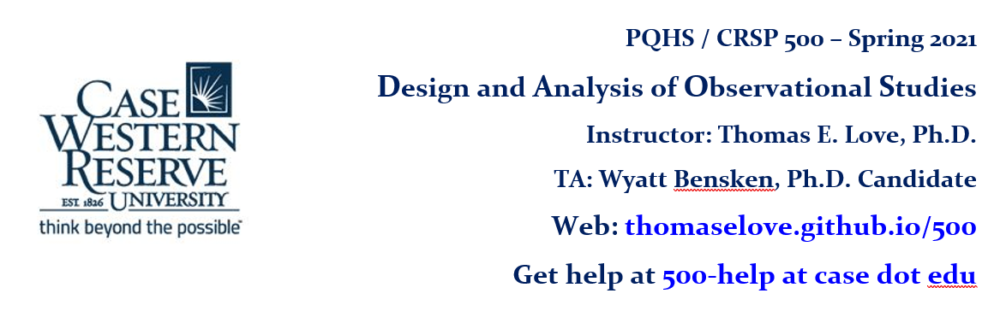

Welcome! PQHS 500 (also called CRSP 500) is taught by Professor Thomas Love in the Department of Population and Quantitative Health Sciences at Case Western Reserve University. Everything that Professor Love will provide to help you with the course will appear on this website.
The class will be held on Thursdays from 8:30 - 11:00 AM virtually, using the Zoom platform, starting on 2021-02-04. Information on the Zoom meetings will be found on Canvas. Registration for the course is required.
The menu bar includes links to everything you’ll need this semester, including
Once you have registered for the course, please visit our Welcome to 500 survey. You’ll need to log into Google via CWRU to take the survey, which should take about 10 minutes to complete. If possible, please complete the survey before our first class on 2021-02-04.
Buy the book. During the course, we will read Paul Rosenbaum’s book Observation and Experiment: An Introduction to Causal Inference, which is available as an e-book or in paperback for under $25. Please buy the book and read the Preface and Chapter 1 before our first class on 2020-02-04.
Take the Welcome to 500 survey.
Download the software. Install R and RStudio and some necessary R packages on a computer you can control throughout the semester. Details are available here.
